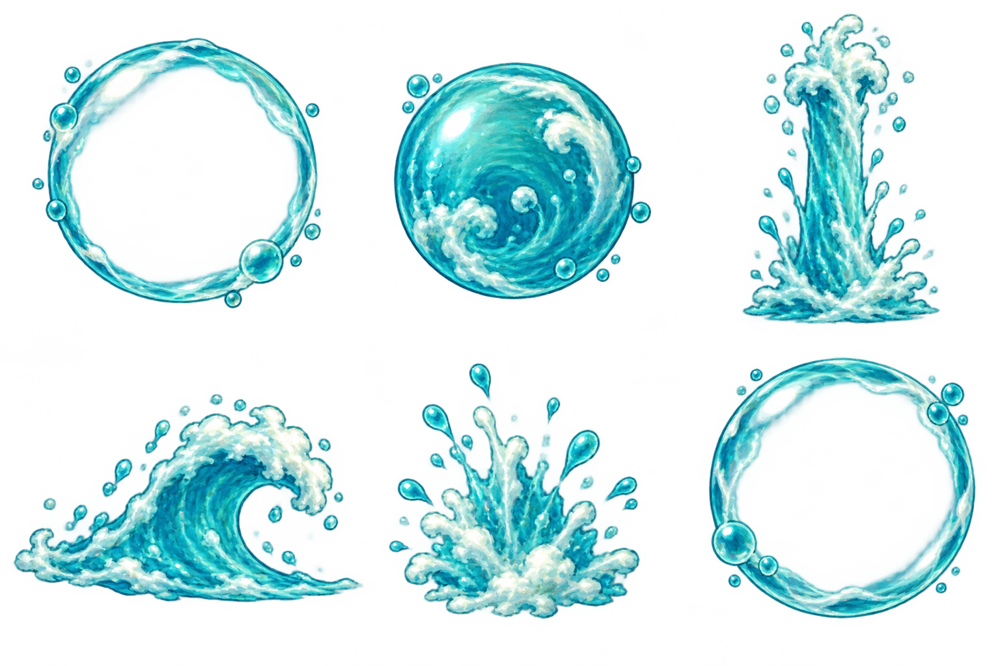
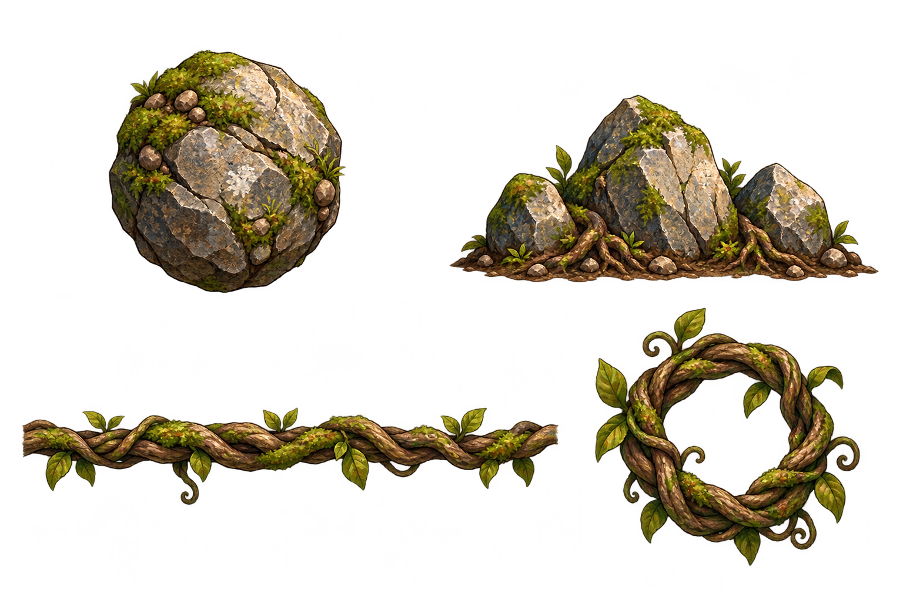

Painted elemental boss attacks
Practice the new water shield and woodland attacks. The shield pushes Benny back without taking a heart. Jump or throw a ready knife to escape the vine; jump over the rising stones.
Arrow keys or joystick move. Space jumps. X / F attacks. Practice uses a separate developer session.

